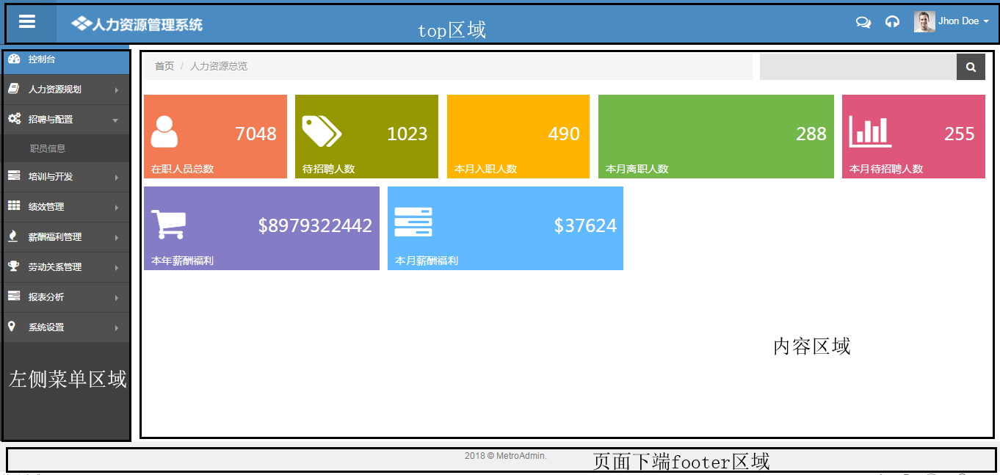
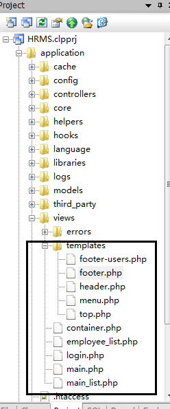
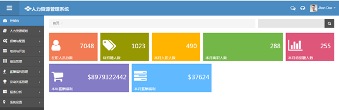
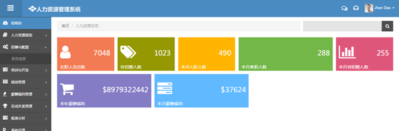

本节讲述如何拆分页面以及使用jquery和ajax实现局部刷新。
==================================================================================================
从我们的页面来看，左边的菜单是不变的，右边的内容区根据不同的菜单来变化，我们就想到是否可以只针对
右边做局部刷新呢，可以使用ajax技术来完成。
1 拆分主页

我们把页面结构分成四块区域：1、页面上端Top区域；2、页面左侧Menu区域；3、页面中部区域；4、页面底端footer区域；
根据这种划分，我们把main_list拆分成top，menu，footer，并把页面head也单独出来，具体参见以下步骤：
1） 在view目录下创建container.php代替main_list.php文件
|
<?php defined('BASEPATH') OR exit('No direct script access allowed'); ?> <!DOCTYPE html> <!--[if IE 8]> <html lang="en" class="ie8"> <![endif]--> <!--[if IE 9]> <html lang="en" class="ie9"> <![endif]--> <!--[if !IE]><!--> <html lang="en"> <!--<![endif]--> <?php $this->load->view('templates/header'); ?> <body class="fixed-top"> <?php $this->load->view('templates/top'); ?> <div id="container" class="row-fluid"> <?php $this->load->view('templates/menu'); ?> <div id="main-content"> <?php $this->load->view('main'); ?> </div> </div> <?php $this->load->view('templates/footer'); ?> </body> </html> |
通过改造，我们的主页代码看起来就很简洁了，其中用到了几个文件：
i)header.php（view->templates目录下），用来存放页面head块代码：
|
<head> <meta charset="utf-8" /> <title>Software Service Manager System</title> <meta content="width=device-width, initial-scale=1.0" name="viewport" /> <meta content="" name="description" /> <meta content="Mosaddek" name="author" />
<!-- <link rel="stylesheet" href="http://cdn.static.runoob.com/libs/bootstrap/3.3.7/css/bootstrap.min.css"/>--> <!-- <link href="https://cdn.bootcss.com/font-awesome/4.7.0/css/font-awesome.css" rel="stylesheet">-->
<link rel="stylesheet" href="<?php echo base_url('assets/font-awesome/css/font-awesome.min')?>"> <link rel="stylesheet" href="<?php echo base_url('assets/bootstrap/css/bootstrap.min.css')?>"> <link rel="stylesheet" href="<?php echo base_url('assets/bootstrap/css/bootstrap-responsive.min.css')?>"> <link rel="stylesheet" href="<?php echo base_url('assets/bootstrap/css/bootstrap-fileupload.css')?>"> <link rel="stylesheet" href="<?php echo base_url('assets/css/style.css')?>"> <link rel="stylesheet" href="<?php echo base_url('assets/css/style-responsive.css')?>"> <link rel="stylesheet" href="<?php echo base_url('assets/css/style-default.css')?>">
<link rel="stylesheet" type="text/css" href="<?php echo base_url('assets/uniform/css/uniform.default.css')?>"> <link rel="stylesheet" href="<?php echo base_url('assets/data-tables/DT_bootstrap.css')?>">
</head> <!--END HEAD--> |
ii)top.php（view->templates目录下），用来存放页面top区域的内容：
|
<!-- BEGIN TOP --> <div id="herder" class="navbar navbar-inverse navbar-fixed-top"> <!-- BEGIN TOP NAVIGATION BAR --> <div class="navbar-inner"> <div class="sidebar-toggle-box hidden-phone"> <div class="fa fa-reorder tooltips" data-placement="right" data-original-title="Toggle Navigation"></div> </div> <!--END SIDEBAR TOGGLE--> <!-- BEGIN LOGO --> <a class="brand" href="<?php echo site_url('Main/index'); ?>"> <img src="<?php echo base_url('assets/img/logo.png')?>" alt="Metro Lab" /> </a>
<!-- BEGIN RESPONSIVE MENU TOGGLER --> <!-- <a class="btn btn-navbar collapsed" id="main_menu_trigger" data-toggle="collapse" data-target=".nav-collapse"> <span class="fa fa-bar"></span> <span class="fa fa-bar"></span> <span class="fa fa-bar"></span> <span class="arrow"></span> </a>--> <div id="top_menu" class="nav notify-row"> <!-- BEGIN NOTIFICATION --> </div> <div class="top-nav "> <ul class="nav pull-right top-menu"> <!-- BEGIN SUPPORT --> <li class="dropdown mtop5">
<a class="dropdown-toggle element" data-placement="bottom" data-toggle="tooltip" href="#" data-original-title="Chat"> <i class="fa fa-comments-o"></i> </a> </li> <li class="dropdown mtop5"> <a class="dropdown-toggle element" data-placement="bottom" data-toggle="tooltip" href="#" data-original-title="Help"> <i class="fa fa-headphones"></i> </a> </li> <!-- END SUPPORT --> <!-- BEGIN USER LOGIN DROPDOWN --> <li class="dropdown"> <a href="#" class="dropdown-toggle" data-toggle="dropdown"> <img src="<?php echo base_url('assets/img/avatar1_small.jpg')?>" alt=""> <span class="username">Jhon Doe</span> <b class="caret"></b> </a> <ul class="dropdown-menu extended logout"> <li> <a href="#">Swing</a></li> <li> <li><a href="#"><i class="fa fa-user"></i>我的资料</a></li> <li><a href="#"><i class="fa fa-cog"></i>我的设置</a></li> <li><a href="login.html"><i class="fa fa-key"></i>退出</a></li> </ul> </li> <!-- END USER LOGIN DROPDOWN --> </ul> <!-- END TOP NAVIGATION MENU --> </div> </div> </div> <!-- END TOP --> |
iii)menu.php（view->templates目录下），用来存放页面menu块代码：
|
<div class="sidebar-scroll" style="overflow: hidden;" tabindex="5000"> <div id="sidebar" class="nav-collapse collapse">
<!-- BEGIN RESPONSIVE QUICK SEARCH FORM --> <div class="navbar-inverse"> <form class="navbar-search visible-phone"> <input class="search-query" placeholder="Search" type="text"> </form> </div> <!-- END RESPONSIVE QUICK SEARCH FORM --> <!-- BEGIN SIDEBAR MENU --> <ul class="sidebar-menu"> <li class="sub-menu active"> <a class="" href="<?php echo site_url('main/index');?>"> <i class="fa fa-dashboard"></i> <span>控制台</span> </a> </li> <li class="sub-menu"> <a href="javascript:;" class=""> <i class="fa fa-book"></i> <span>人力资源规划</span> <span class="arrow"></span> </a> </li> <li class="sub-menu"> <a href="javascript:;" class=""> <i class="fa fa-cogs"></i> <span>招聘与配置</span> <span class="arrow"></span> </a> <ul class="sub"> <li><a class="sub1" href="#">职员信息</a></li> </ul> </li> <li class="sub-menu"> <a href="javascript:;" class=""> <i class="fa fa-tasks"></i> <span>培训与开发</span> <span class="arrow"></span> </a> </li> <li class="sub-menu"> <a href="javascript:;" class=""> <i class="fa fa-th"></i> <span>绩效管理</span> <span class="arrow"></span> </a> </li> <li class="sub-menu"> <a href="javascript:;" class=""> <i class="fa fa-fire"></i> <span>薪酬福利管理</span> <span class="arrow"></span> </a> </li> <li class="sub-menu"> <a class="" href="javascript:;"> <i class="fa fa-trophy"></i> <span>劳动关系管理</span> <span class="arrow"></span> </a> </li> <li class="sub-menu"> <a href="javascript:;" class=""> <i class="fa fa-tasks"></i> <span>报表分析</span> <span class="arrow"></span> </a> </li> <li class="sub-menu"> <a class="" href="javascript:;"> <i class="fa fa-map-marker"></i> <span>系统设置</span> <span class="arrow"></span> </a> <ul class="sub"> <li><a class="" href="calendar.html">用户管理</a></li> <li><a class="" href="calendar.html">权限管理</a></li> </ul> </li>
<!-- END SIDEBAR MENU --> </div> </div> |
iV)footer.php（view->templates目录下），用来存放页面footer块代码：
|
<!-- BEGIN FOOTER --> <div id="footer"> 2018 © MetroAdmin. </div>
<!-- BEGIN JAVASCRIPTS --> <!-- Load javascripts at bottom, this will reduce page load time --> <!-- <script src="https://cdn.bootcss.com/jquery/2.1.1/jquery.min.js"></script>--> <script src="<?php echo base_url('assets/js/jquery-3.2.1.min.js')?>"></script> <script type="text/javascript" src="<?php echo base_url('assets/js/jquery.nicescroll.js')?>"></script> <script type="text/javascript" src="<?php echo base_url('assets/jquery-slimscroll/jquery-ui-1.9.2.custom.min.js')?>"></script> <script type="text/javascript" src="<?php echo base_url('assets/jquery-slimscroll/jquery.slimscroll.min.js')?>"></script> <script src="<?php echo base_url('assets/fullcalendar/fullcalendar.min.js')?>"></script> <script src="<?php echo base_url('assets/bootstrap/js/bootstrap.min.js')?>"></script> <script src="<?php echo base_url('assets/js/jquery.blockui.js')?>"></script> <script src="<?php echo base_url('assets/uniform/jquery.uniform.min.js')?>"></script>
<!-- ie8 fixes --> <!--[if lt IE 9]> <script src="js/excanvas.js"></script> <script src="js/respond.js"></script> <![endif]--> <script type="text/javascript" src="<?php echo base_url('assets/jquery-easy-pie-chart/jquery.easy-pie-chart.js')?>"></script> <script type="text/javascript" src="<?php echo base_url('assets/js/jquery.sparkline.js')?>"></script> <script src="<?php echo base_url('assets/chart-master/Chart.js')?>"></script> <script src="<?php echo base_url('assets/js/jquery.scrollTo.min.js')?>"></script>
<!--common script for all pages--> <script src="<?php echo base_url('assets/js/common-scripts.js')?>"></script> <!--script for this page only--> <script src="<?php echo base_url('assets/js/easy-pie-chart.js')?>"></script> <script src="<?php echo base_url('assets/js/sparkline-chart.js')?>"></script> <script src="<?php echo base_url('assets/js/home-page-calender.js')?>"></script> <script src="<?php echo base_url('assets/js/home-chartjs.js')?>"></script> |
V)main.php（view目录下），用来存放页面主页面内容区代码：
|
<div class="container-fluid"> <!-- BEGIN PAGE HEADER--> <div class="row-fluid"> <div class="span12"> <!-- BEGIN PAGE TITLE & BREADCRUMB--> <h3 class="page-title"> </h3> <ul class="breadcrumb"> <li> <a href="<?php echo site_url('main/index');?>">首页</a> <span class="divider">/</span> </li> <li class="pull-right search-wrap"> <form action="search_result.html" class="hidden-phone"> <div class="input-append search-input-area"> <input class="" id="appendedInputButton" type="text"> <button class="btn" type="button"><i class="fa fa-search"></i> </button> </div> </form> </li> </ul> <!-- END PAGE TITLE & BREADCRUMB--> </div> </div> <!-- END PAGE HEADER--> <!-- BEGIN PAGE CONTENT--> <div class="row-fluid"> <!--BEGIN METRO STATES--> <div class="metro-nav"> <div class="metro-nav-block nav-block-orange"> <a data-original-title="" href="#"> <i class="fa fa-user"></i> <div class="info">7048</div> <div class="status">在职人员总数</div> </a> </div> <div class="metro-nav-block nav-olive"> <a data-original-title="" href="#"> <i class="fa fa-tags"></i> <div class="info">1023</div> <div class="status">待招聘人数</div> </a> </div> <div class="metro-nav-block nav-block-yellow"> <a data-original-title="" href="#"> <i class="fa fa-comments-alt"></i> <div class="info">490</div> <div class="status">本月入职人数</div> </a> </div> <div class="metro-nav-block nav-block-green double"> <a data-original-title="" href="#"> <i class="fa fa-eye-open"></i> <div class="info">288</div> <div class="status">本月离职人数</div> </a> </div> <div class="metro-nav-block nav-block-red"> <a data-original-title="" href="#"> <i class="fa fa-bar-chart"></i> <div class="info">255</div> <div class="status">本月待招聘人数</div> </a> </div> </div> <div class="metro-nav"> <div class="metro-nav-block nav-light-purple double"> <a data-original-title="" href="#"> <i class="fa fa-shopping-cart"></i> <div class="info">$8979322442</div> <div class="status">本年薪酬福利</div> </a> </div> <div class="metro-nav-block nav-light-blue double"> <a data-original-title="" href="#"> <i class="fa fa-tasks"></i> <div class="info">$37624</div> <div class="status">本月薪酬福利</div> </a> </div> </div> <div class="space10"></div> <!--END METRO STATES--> </div>
<!-- END PAGE CONTENT--> </div> |
2)目前我们的工程结构如下

2、修改controllers->Main.php文件
|
<?php defined('BASEPATH') OR exit('No direct script access allowed');
class Main extends CI_Controller {
public function __construct(){ parent::__construct(); $this->load->helper('url_helper'); }
public function index() { $this->load->view('container'); } } |
3 ajax的应用
为了实现局部刷新，我们引入了ajax来实现；
1）在footer.php文件中增加以下内容
|
<script> $(document).ready(function(){ $(".sub1").click(function(){ $.ajax({url:"<?php echo site_url('Employee/index')?>",success:function(result){ $("#main-content").html(result); }}); }); }); </script> |
其中，sub1是与menu.php中的"职员信息"菜单对应的。
3 运行测试
运行主页如下；

点"职员信息"菜单，页面如下

总结：
本文首先拆分了主页，使得模块更加独立，页面代码也更清晰，同时使用ajax技术，实现了页面的局部刷新；
====================================The End==========================